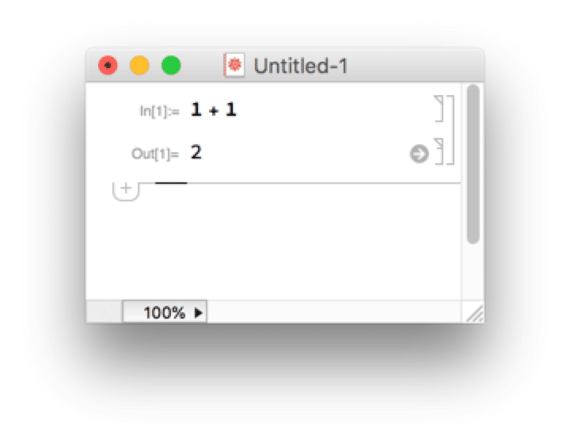
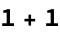
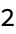

---
redirect_from:
  - "/introduction/introduction"
title: |-
  Introduction
pagenum: 1
prev_page:
  url: /home.html
next_page:
  url: /Simple_Computations/Simple_Computations.html
suffix: .md
search: p style class introduction wolfram span language www htmlfiles item width png px com text input border src alt height vertical align middle top created students personal only html head title href css body enter cell output gif img div font none color xmlns w org xhtml link rel stylesheet type inset section notebook interface very similar jupyter notebooks code expressions shift return numeric keypad evaluates expression shown below inputinlinespanimg family helvetica size solid padding margin decoration

comment: "***PROGRAMMATICALLY GENERATED, DO NOT EDIT. SEE ORIGINAL FILES IN /content***"
---

    <main class="jupyter-page">
    <div id="page-info"><div id="page-title">Introduction</div>
</div>
    <div class="jb_cell">

<div class="cell border-box-sizing text_cell rendered"><div class="inner_cell">
<div class="text_cell_render border-box-sizing rendered_html">
<!-- Created with the Wolfram Language for Students - Personal Use Only : www.wolfram.com -->

<html xmlns="http://www.w3.org/1999/xhtml">
<head>
 <title>
  Introduction (the Wolfram Language for Students - Personal Use Only : www.wolfram.com)
 </title>
 <link href="HTMLFiles/Introduction.css" rel="stylesheet" type="text/css" />
 <style>
 .Input {
  border-style: inset;
}
 </style>
</head>

<body>

<p class="Section">
 The notebook interface
</p>


<p class="Item">
 Very similar to Jupyter notebooks
</p>


<p class="Item">
 Enter code/expressions in a cell
</p>


<p class="Item">
 Shift-return (or enter on the numeric keypad) evaluates the expression
</p>


<p class="Item">
 The output is shown below the input cell
</p>


<p class="Text">
 <span class="InputInline"><span></span></span>
</p>


<p class="Input">
 
</p>

<p class="Output">
 
</p>


<div style="font-family:Helvetica; font-size:11px; width:100%; border:1px none #999999; border-top-style:solid; padding-top:2px; margin-top:20px;">
 <a href="http://www.wolfram.com/language/" style="color:#000; text-decoration:none;">
  <span style="color:#555555">Created with the Wolfram Language</span> 
 </a>
</div>
</body>

</html>
</div>
</div>
</div>
</div>

 


    </main>
    